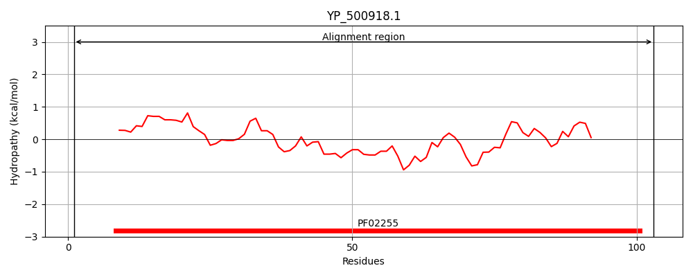
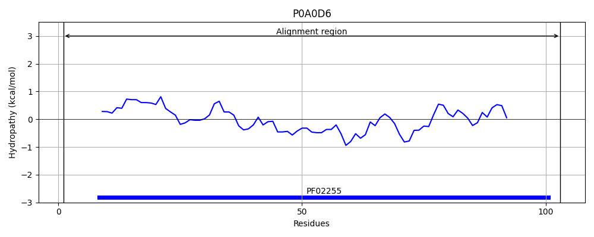
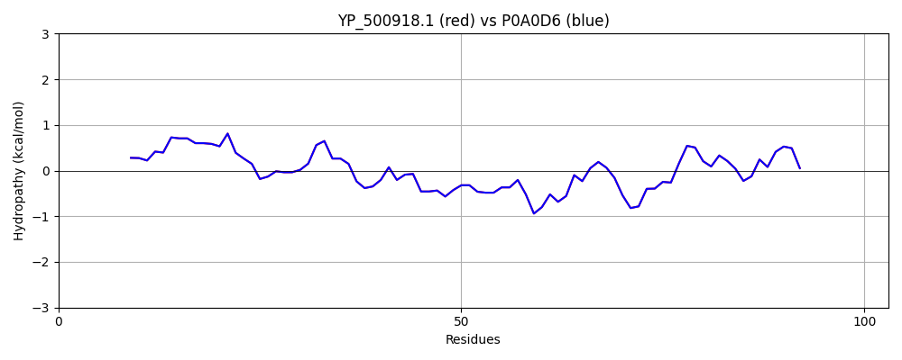

Hit Accession: P0A0D6
Hit TCID: 4.A.3.1.1
Hit Description: gnl|BL_ORD_ID|8532 gnl|TC-DB|P0A0D6|4.A.3.1.1 Lactose-specific phosphotransferase enzyme IIA component - Staphylococcus aureus.
Mach Len: 103
e:0.000000
Query TMS Count : 0
Hit TMS Count: 0
TMS-Overlap Score: 0.000000
Predicted Substrates:CHEBI:6353;alpha-lactose
BLAST Alignment:
| Protein Hydropathy Plots: | |
|---|---|
|  |  |
Pairwise Alignment-Hydropathy Plot: | |
|  | |